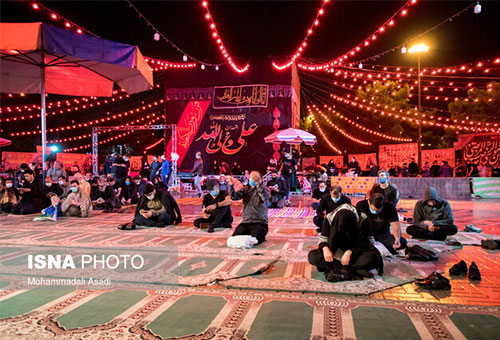

- پر بازدیدترین اخبار
کنکور
داوطلبان آزمون ارشد 1400؛ کنکور را به زمان دیگری موکول کنید+فیلمهای ارسالی داوطلبان
کرونا
۳۹۴ بیمار دیگر قربانی کرونا شدند/ عبور تستهای تشخیصی در کشور از مرز ۱۶ میلیون آزمایش
- 
ممنوعیت تردد
رییس پلیس راهنمایی و رانندگی تهران بزرگ محدودیتها و ممنوعیتهای ترافیکی ویژه شبهای قدر را تشریح کرد.
آخرین وضعیت حمید هیراد
آخرین وضعیت جسمی حمید هیراد، یک روز پس از اعلام ابتلای این خواننده به کرونا، مشخص شد.
ببینید | واکنش کرباسچی به لایو انتخاباتی سعید جلیلی درباره مذاکرات هستهای!
شکایت رسمی الاهلی عربستان از استقلال
ببینید | عامل انتشار فایل صوتی جنجالی محمد جواد ظریف شناسایی شد: جنابخان!
ببینید | پیام هنرمندان در یادبود چهلمین روز درگذشت آزاده نامداری
بررسی ابعاد حقوقی شکایت الاهلی عربستان از استقلال
ببینید | مصاحبه تند و تیز علی مطهری در گفت و گو با محمدرضا حیاتی!
شرط عجیب استقلال برای ترانسفر قایدی

غایب بزرگ جدال سپاهان و پرسپولیس
ببینید | پدیده جدید کلاهبرداری/ دیه گیری زوری در روز روشن
- جدیدترین اخبار
ادعاهایی مداخله جویانه
درخواست وزیر خارجه انگلیس برای آزادی نازنین زاغری
انتقاد تند محیط زیست
وزارت صنعت، معدن و تجارت اخیرا برخی مقررات زیستمحیطی را بهعنوان موانع حوزه کسب و کار معرفی کرده
برجام
معاون وزیر امور خارجه جمهوری اسلامی ایران گفت: مذاکرات با طرفین درباره برجام روند رو به جلو دارد
لیگ قهرمانان فوتبال آسیا
دعوای سعودیها برای بازی با تیمهای ایران/ پای استقلال در میان است!